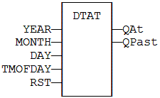
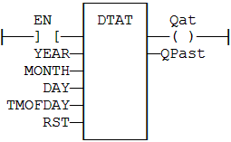

Function Block
Generate a pulse at given date and time
|
Name |
Type |
Description |
|
YEAR |
DINT |
Desired year (e.g. 2006). |
|
MONTH |
DINT |
Desired month (1 = January). |
|
DAY |
DINT |
Desired day (1 to 31). |
|
TMOFDAY |
TIME |
Desired time. |
|
RST |
BOOL |
Reset command. |
|
Name |
Type |
Description |
|
QAT |
BOOL |
Pulse signal. |
|
QPAST |
BOOL |
TRUE if elapsed. |
Real Time clock may be not available on some targets. Please refer to OEM instructions for further details about available features.
Parameters are not updated constantly. They are taken into account when only:
„ the first time the block is called.
„ when the reset input (RST) is TRUE.
In these two situations, the outputs are reset to FALSE.
The first time the block is called with RST=FALSE and the specified date/stamp is passed, the output QPAST is set to TRUE, and the output QAT is set to TRUE for one cycle only (pulse signal).
Highest units are ignored if set to 0. For instance, if arguments are year=0, month=0, day = 3, tmofday=t#10h then the block will trigger on the next 3rd day of the month at 10h.
In LD language, the block is activated only if the input rung is TRUE.
MyDTAT is a declared instance of DTAT function block.
MyDTAT (YEAR, MONTH, DAY, TMOFDAY, RST);
QAT := MyDTAT.QAT;
QPAST := MyDTATA.QPAST;

Called only if EN is TRUE.

MyDTAT is a declared instance of DTAT function block.
Op1: CAL MyDTAT (YEAR, MONTH, DAY, TMOFDAY, RST)
LD MyDTAT.QAT
ST QAT
LD MyDTATA.QPAST
ST QPAST